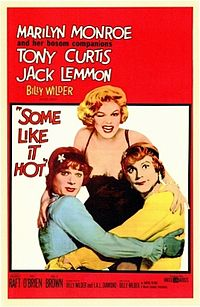
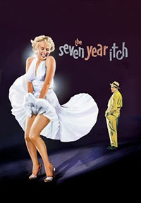
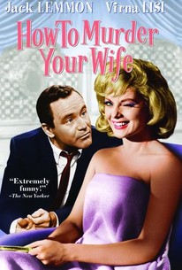

Some Like It Hot 1959.
Gentlemen Prefer Blondes 1953.
The Seven Year Itch 1955.
Sabrina 1954.
How To Murder Your Wife 1965.
Roman Holiday 1953.
Monkey Business 1952.
It's A Wonderful World 1939.
Some Like It Hot is a 1959 comedy directed by Billy Wilder,starring Jack Lemmon,Tony Curtis and Marilyn Monroe. The story is about two musicians who witness to a Mafia murder in Chicago and to escape from the killers they disguise themselves as women joining then a girls jazz band heading to Miami. It is a brillian comedy and it is very famouse for the homosexualy theme that had never been discussed before. "Nobody is perfect" is the most famous quote related to this movie.

Gentlemen Prefer Blondes is 1953 comedy directed by Howard Hawks,starring Marilyn Monroe,Jane Russell,Charles Coburn,Elliot Reid and Tommy Noonan. The story is about two showgirls completely different one to another but really good friends. The two girls are gonna deal with some trouble,some missing diamonds and some particular men. This movie is remembered for two songs "Diamonds are a girl's bestfriends" and "Bye Bye Baby"
The Seven Year Itch is a 1955 comedy directed by Billy Wilder,starring Marilyn Monroe and Tom Ewell. The story is about a business left alone in New York during the summer who meets a blonde model just moved into the apartment upstairs. This movie gave us probably the most iconin movie scene ever, Monroe's subway dress.

Sabrina is a 1954 comedy directed by Billy Wilder,starring Audrey Hepburn,Humphrey Bogart and William Holden. The story is about a chaffeur's daughter who has always been in love with one of the Larrabee brothers. Eventually she will find out that people are different than they look like.
How to murder your wife is a 1965 comedy directed by Richard Quine,starring Virna Lisi and Jack Lemmon. The story is about a single successful cartoonist who gets drunk one night and wakes up married the morning after.

The Roman Holiday is a 1953 comedy directed by Billy Wilder,starring Audrey Hepburn and Gregory Peck. The story is about a Princess who takes off a night in Rome and meets an American reporter who wants to take an advantage of her. Famous is the scene of Peck and Hepburn riding a Vespa around Rome.

Monkey Business is a 1952 comedy directed by Howard Hawks, starring Marilyn Monroe, Cary Grant and Ginger Rogers. The story is about a chemist and his project of a pill that can defy the aging process. Many troubles are coming.